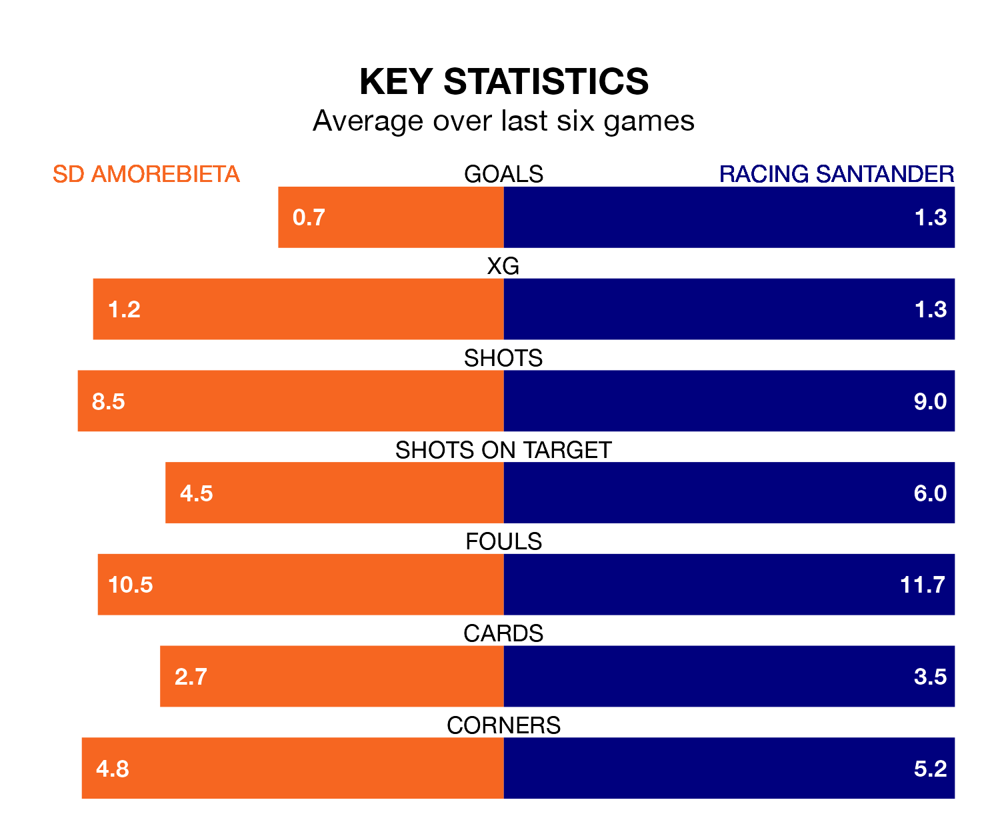

SD Amorebieta are on a terrible run ahead of hosting Racing Santander at Instalaciones de Lezama Campo 2 on Sunday, with just two points collected from their last six games.
Amorebieta have picked up two draws and four losses in their last six Segunda División games, and face a Racing side whose last six games have brought one win and two draws.
Amorebieta are bottom of the table after 24 games, of which they have won three and drawn seven, earning 16 points.
Racing are 10 places ahead of the hosts in 12th, with nine wins and six draws putting them on 33 points.
With 19 goals in 24 games so far this season, Amorebieta are the league's joint-second-lowest scorers with 0.8 goals per game. And they are conceding more than average, letting in 35 goals at a rate of 1.5 per game.
The away side, meanwhile, are above average scorers, with 1.5 goals per game, compared to a league average of 1.2. They have also conceded 1.5 goals per game.
In Gerard Fernández Castellano, Racing have one of the league's sharpest shooters so far this season. He has notched 11 goals in 23 appearances, to sit second in the scoring charts.
Amorebieta's top scorers, with three goals each, are Eneko Jauregi Escobar and Félix Garreta.
In the last 10 years, Amorebieta and Racing have played each other on nine occasions. Amorebieta won two of them, Racing six, and they drew once.
On average, Amorebieta scored 0.6 goals and Racing 1.3 in those matches.
Their last meeting was on September 10, when Racing won 1-0 at home.
Amorebieta's last match was on January 27, a 1-0 loss against FC Cartagena.
Racing lost 3-1 against Real Valladolid last time out, on Monday, with Fernández Castellano on the scoresheet.
Sunday's match will be refereed by Iván Caparrós Hernández, who has taken charge of 12 Segunda División games so far this season, issuing one red card and booking 63 players. He has awarded five penalties.
The last Amorebieta game Caparrós Hernández refereed was a 1-1 away draw with Sporting Gijón on November 11. His last Racing match was their 2-2 draw at home against Real Oviedo on December 10.
Updated: 14:12 (UTC), 02/02/24